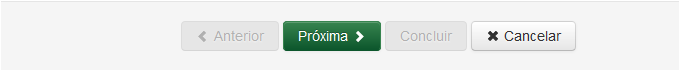

Cadastrar Documento
A funcionalidade de Cadastrar Documento é utilizada para cadastrar todos os documentos, sejam eles produzidos ou recebidos.
Para cadastrar um documento selecione a opção Documento no menu do sistema SGDoc:
Menu do sistema SGDoc
O cadastro do documento é realizado em duas partes: Validar Digital e Cadastrar Documento. Primeiramente é feita a validação da digital, ou seja, verificar se a digital está disponível e se pertence ao setor do usuário logado:
Tela Validar Digital
Após a validação da digital a tela Cadastrar Documento é apresentada exibindo 5 abas: Dados Gerais, Origem/Destino, Assunto, Interessados e Referências:
Tela Cadastrar Documento
Os campos de cada aba serão apresentados de acordo com a procedência (externa ou interna) do documento a ser cadastrado.
Após o cadastro, o Documento estará disponível na Área de Trabalho - Minha, do usuário que o cadastrou.
 Formas de "navegar" pelas abas do cadastro de documento!
Formas de "navegar" pelas abas do cadastro de documento!

Barra de Navegação da Tela Cadastro de Documento
Ao clicar no botão  o sistema retorna para a tela de Cadastrar Documento, caso contrário, ao clicar no botão o sistema retorna para a tela de Validar Digital.
o sistema retorna para a tela de Cadastrar Documento, caso contrário, ao clicar no botão o sistema retorna para a tela de Validar Digital.
IMPORTANTE!!
 Lembrete 1:
Lembrete 1:
Deve-se preencher todos os campos obrigatórios antes de passar para a aba seguinte (antes de clicar no botão Próxima). Caso contrário o sistema apresenta mensagem de erro por haver campos obrigatórios a serem preenchidos!
 Lembrete 2:
Lembrete 2:
O cadastro de documento somente pode ser finalizado (clicar no botão Concluir) após terem sido preenchidos todos os campos obrigatórios do cadastro de documento. Caso contrário o sistema apresenta mensagem de erro por haver pendências de obrigatoriedade!
Created with the Personal Edition of HelpNDoc: iPhone web sites made easy